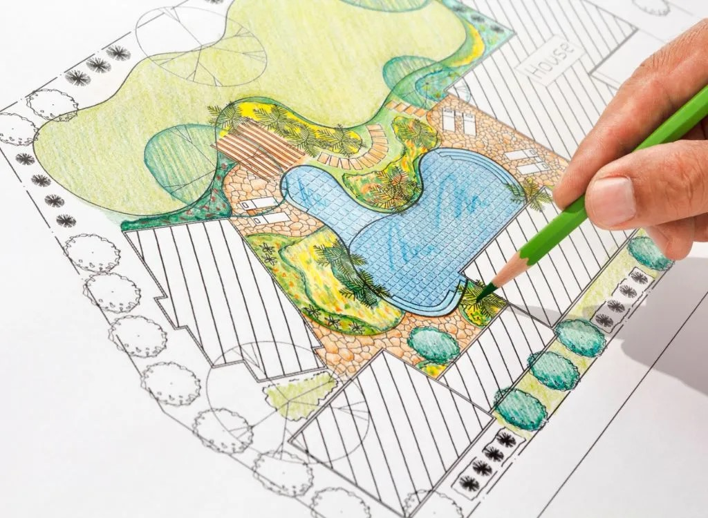
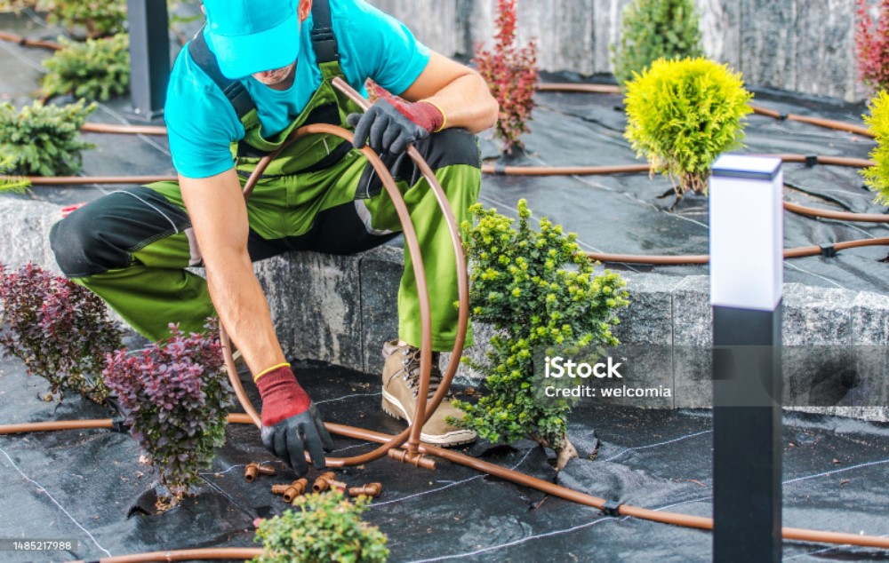

SprinklerUSA Irrigation Design:
An irrigation design outlines the key components of your property’s irrigation system—including many parts that are often hidden. A precise, high-quality irrigation map is color-coded to show where each zone starts and ends. It marks every valve and sprinkler head, and it clearly identifies the location of irrigation clocks and the mainline for the system.

Xeroscape
We build a custom water irrigation design tailored to your specific landscape to ensure that every part of your yard gets the right amount of water, maximizing efficiency and promoting a healthier, premium green landscape..